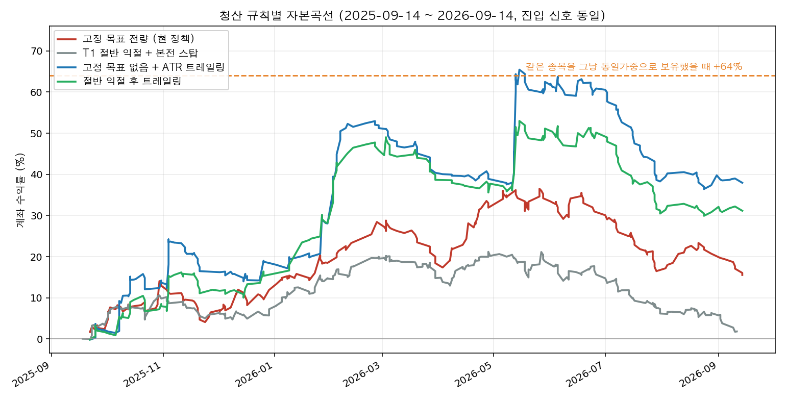
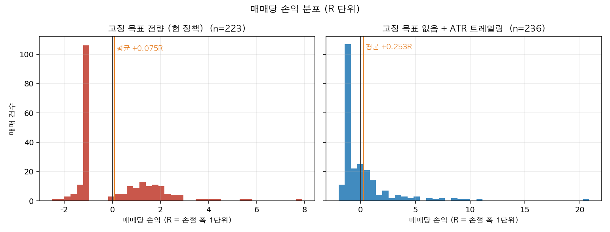
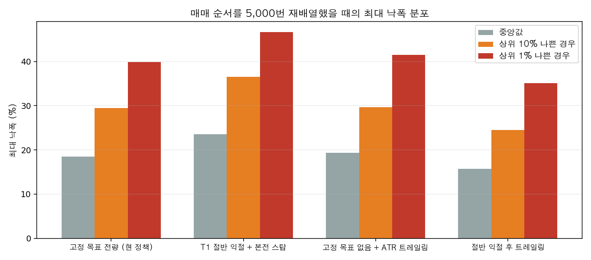

| 항목 | 값 |
|---|---|
| 테스트 구간 | 2025-09-14 ~ 2026-09-14 (1년, 단일 상승 국면) |
| 유니버스 | 보유·관심 16종목 + 무작위 10종목(시드 20260914) = 26종목 요청 |
| 실제 검증 | 24종목 (2종목은 봉 부족으로 제외) |
| 신호 | 셋업 555회 산출(셋업이 안 나온 날 58회 별도) → 손익비 1 미만 124회 제외 → 197회 미체결 만료 → 232회 체결 |
| 완결 매매 | 223건 (고정 목표 기준) |
| 가격 | 배당 조정, 휴장일 유령 봉 제거 |
제외된 2종목과 이유를 그대로 적습니다. SOL AI반도체TOP2+ (0167A0.KS)는 상장 이후 일봉이 124개뿐이라 엔진이 요구하는 200개에 못 미칩니다. NEMCL은 618개 봉 중 570개가 시·고·저·종가가 같고 거래량이 0인 비거래일이어서, 실제로 거래된 봉은 48개뿐입니다.
무작위 10종목은 오늘 상장돼 있고 시가총액 상위에 드는 종목군에서 뽑았습니다. 생존편향이 줄었을 뿐 사라지지는 않았습니다. 보유·관심 16종목은 그동안 살아남았기 때문에 목록에 있는 것이므로 낙관 상한으로만 읽어야 합니다.
| 층 | 내용 | 이번에 한 일 |
|---|---|---|
| 구조 엔진 | `compute_indicators` → `build_trade_setups` | 과거 재현 백테스트 |
| 집행 정책 | 구조적 손절 / 목표 전량 / 1% 리스크 / 13% 상한 | 코드로 옮겨 시뮬레이션 |
| 판단층(LLM) | 대표 셋업 선정, 패스 결정, 서술 | 백테스트 불가 — 발행된 리포트 채점만 |
판단층을 백테스트하면 안 되는 이유는 두 가지입니다. 모델이 테스트 구간을 이미 학습했고, 규칙집(`CLAUDE.md`) 자체가 "2026-08-31 COHR 리포트 오류에서 도출", "USAR 검토에서 도출"처럼 결과를 보고 쓰였습니다. 지금 규칙으로 과거를 돌리면 표본 내 튜닝 결과가 나옵니다.
진입 신호는 네 경우 모두 완전히 동일합니다. 차이는 전부 청산에서 옵니다.
| 청산 규칙 | 완결 | 기대값(R) | 중앙값 | 승률 | 페이오프 | Profit factor | 계좌 수익률 | 최대 낙폭 |
|---|---|---|---|---|---|---|---|---|
| 고정 목표 전량 (현 정책) | 223 | +0.075 | -1.006 | 42.1% | 1.53 | 1.12 | +15.6% | 15.4% |
| T1 절반 익절 + 본전 스탑 | 290 | -0.007 | +0.031 | 51.4% | 0.93 | 0.98 | +1.8% | 16.0% |
| 고정 목표 없음 + ATR 트레일링 | 236 | +0.254 | -0.858 | 36.4% | 2.45 | 1.41 | +37.9% | 17.5% |
| 절반 익절 후 트레일링 | 204 | +0.243 | -1.008 | 39.2% | 2.13 | 1.37 | +31.2% | 15.1% |

승률이 가장 높은 판본(T1 절반 익절, 51.4%)이 유일하게 기대값이 음수입니다. 승률이 가장 낮은 판본(트레일링, 36.4%)이 가장 많이 법니다. 말씀하신 목표 — 승률이 낮아도 이긴 돈이 크면 된다 — 와 정합적인 것은 트레일링 쪽이며, 수치가 그 방향을 지지합니다.
T1 절반 익절 판본이 중요한 이유가 하나 더 있습니다. 엔진이 대표 셋업을 고를 때 쓰는 점수(`_rank_score`)가 `risk_reward_blended`, 즉 이 절반 익절을 전제로 계산한 손익비를 우선 씁니다(`data/charts.py:441`, 그 값이 없을 때만 전 구간 손익비로 내려옵니다). 집행 정책은 목표에서 전량 청산인데, 셋업을 고르는 점수는 그와 다른 청산 계획을 전제하고 있습니다.

| 지표 | 고정 목표 | 트레일링 |
|---|---|---|
| 총수익 중 상위 1건 비중 | 4.9% | 10.1% |
| 상위 3건 비중 | 12.0% | 19.8% |
| 상위 1건 제거 후 기대값 | +0.040R | +0.166R |
| 상위 3건 제거 후 기대값 | -0.011R | +0.081R |
| 상위 5건 제거 후 기대값 | -0.051R | +0.005R |
| 평균 최대 유리폭(MFE) | 1.27R | 1.95R |
| 평균 최대 역행폭(MAE) | -0.94R | -0.87R |
현 정책의 기대값은 상위 3건에 의존합니다. 그 3건을 빼면 부호가 바뀝니다. 트레일링 판본은 상위 5건을 빼도 간신히 양수로 남습니다.
| 청산 규칙 | 목표에서 청산된 매매 | 평균 남긴 R | 중앙값 | 최대 | 1R 이상 놓친 비율 |
|---|---|---|---|---|---|
| 고정 목표 전량 | 96건 | +0.43R | +0.22R | +3.63R | 9% |
| T1 절반 익절 | 76건 | +0.92R | +0.74R | +4.17R | 30% |
목표에서 청산된 매매가 그 뒤 실제로 더 간 거리입니다. 고정 목표는 평균 0.43R을 남기고 나오며, 절반 익절 판본은 0.92R을 남깁니다. 히스토그램에서 고정 목표 쪽 분포가 +3R 부근에서 끊기고 트레일링 쪽이 +20R까지 이어지는 것이 같은 사실의 다른 표현입니다.
| 비교 대상 | 수익률 | 최대 낙폭 |
|---|---|---|
| 코스피 | +102.8% | 38.6% |
| 나스닥 종합 | +17.2% | 13.2% |
| S&P 500 | +15.2% | 9.1% |
| 검증한 24종목 동일가중 보유 | +64.0% | 종목 평균 42.7% |
| 시스템 — 고정 목표 (현 정책) | +15.6% | 15.4% |
| 시스템 — 트레일링 | +37.9% | 17.5% |
| 청산 규칙 | 한국 수익률 | 미국 수익률 |
|---|---|---|
| 고정 목표 | +17.8% | -2.2% |
| T1 절반 익절 | +4.0% | -2.1% |
| 트레일링 | +41.1% | -3.1% |
| 절반 익절 후 트레일링 | +28.6% | +2.6% |
네 규칙 전부, 이익이 한국 종목에서만 나옵니다. 그런데 같은 기간 검증한 한국 12종목을 그냥 동일가중으로 보유하면 +91.8%였습니다. 미국 12종목은 보유 시 +36.3%인데 시스템은 손실입니다. 한국에서의 이익은 엔진의 판별력이라기보다 코스피가 두 배가 된 국면에 롱으로 노출된 결과일 가능성이 큽니다.
| 진입 분기 | 고정 목표 기대값 | 트레일링 기대값 | 매매 수 |
|---|---|---|---|
| 2025 Q3 | +0.458R | +1.014R | 18 |
| 2025 Q4 | +0.169R | +0.497R | 57~59 |
| 2026 Q1 | +0.320R | +0.698R | 54~56 |
| 2026 Q2 | -0.068R | -0.180R | 57~65 |
| 2026 Q3 | -0.393R | -0.399R | 37~38 |
최근 두 분기가 두 규칙 모두 음수입니다. 자본곡선에서 5~6월 고점 이후 모든 선이 내려오는 구간과 같습니다. 1년 합계가 양수인 것은 앞 세 분기 덕분입니다.
보유·관심 목록과 무작위 추출을 따로 돌렸습니다. 앞의 모든 숫자는 두 집단을 합친 것입니다.
| 청산 규칙 | 보유·관심 15종목 기대값 | 무작위 9종목 기대값 | 보유·관심 수익률 | 무작위 수익률 |
|---|---|---|---|---|
| 고정 목표 (현 정책) | +0.139R | -0.048R | +13.6% | +1.9% |
| T1 절반 익절 | +0.121R | -0.229R | +8.3% | -6.5% |
| 트레일링 | +0.292R | +0.185R | +26.9% | +11.1% |
| 절반 익절 후 트레일링 | +0.313R | +0.116R | +22.6% | +8.6% |
| 참고 | 보유·관심 15종목 | 무작위 9종목 |
|---|---|---|
| 그냥 동일가중으로 보유했을 때 | +101.4% | +1.8% |
두 집단의 성격이 정반대입니다. 보유·관심 종목은 그냥 들고만 있어도 1년에 두 배가 됐고 거기서는 어떤 청산 규칙도 보유를 못 이깁니다. 무작위 종목은 1년 동안 제자리(+1.8%)였는데, 거기서는 트레일링 판본이 +11.1%로 보유를 앞섰습니다.
읽는 법은 이렇습니다. 이 엔진은 박스와 눌림을 거래하므로 크게 오르는 장에서는 상방을 잘라 먹고 보유에 집니다. 반대로 방향이 없는 장에서는 보유보다 낫습니다. 그리고 현 정책은 선택편향을 걷어낸 쪽에서 기대값이 음수이므로, 전체 합계 +0.075R을 시스템의 실력으로 읽으면 안 됩니다.
값을 바꿔 가며 부호가 유지되는지만 봤습니다. 이 결과로 값을 고치지 않습니다 — 1년짜리 표본에서 좋은 값을 고르면 그것이 곧 표본 내 튜닝입니다.
| 바꾼 값 | 범위 | 고정 목표 (현 정책) | 트레일링 |
|---|---|---|---|
| 슬리피지 | 0 / 10 / 30bp | +0.109 → +0.062 → -0.031 ❌ | +0.291 → +0.239 → +0.136 ✅ |
| 트레일링 폭 | 1.5 ~ 4.0 ATR | 해당 없음 | +0.248 ~ +0.565 ✅ |
| 미체결 만료 | 5 / 10 / 20일 | +0.017 → +0.075 → -0.055 ❌ | +0.488 → +0.254 → +0.344 ✅ |
| 신호 주기 | 3 / 7 / 14일 | -0.014 → +0.075 → +0.080 ❌ | +0.329 → +0.254 → +0.030 ✅ |
| 최소 손익비 | 0 / 1.0 / 1.5 / 2.0 | +0.059 → +0.075 → +0.033 → -0.045 ❌ | +0.218 → +0.254 → +0.054 → -0.190 ❌ |
현 정책은 네 축 중 네 축에서 부호가 바뀝니다. 지금의 조합(만료 10일, 신호 주기 7일, 슬리피지 10bp)이 우연히 양수가 나오는 자리에 있습니다. 트레일링 판본은 최소 손익비를 제외한 세 축에서 부호를 지킵니다.
최소 손익비 축은 따로 볼 값이 있습니다. 손익비 문턱을 1.5나 2.0으로 높이면 모든 규칙이 나빠집니다. 손익비가 높은 셋업은 진입가가 현재가에서 멀어 체결이 잘 안 되고, 체결되면 그만큼 구조가 덜 확인된 자리입니다. 손익비가 높을수록 좋은 셋업이라는 전제는 이 표본에서 성립하지 않습니다.
승률이 낮은 시스템은 큰 이익이 오는 날까지 살아남아야 이깁니다. 실현된 매매를 순서만 바꿔 5,000번 다시 배열했습니다(1회 1% 리스크, 복리).

| 청산 규칙 | 낙폭 중앙값 | 상위 10% 나쁜 경우 | 상위 1% | 1년 수익률 중앙값 | 돈을 잃을 확률 |
|---|---|---|---|---|---|
| 고정 목표 (현 정책) | 18.5% | 29.5% | 39.9% | +15.0% | 27.0% |
| T1 절반 익절 | 23.5% | 36.6% | 46.7% | -6.1% | 59.8% |
| 트레일링 | 19.3% | 29.6% | 41.5% | +67.8% | 7.6% |
| 절반 익절 후 트레일링 | 15.7% | 24.5% | 35.1% | +57.0% | 5.6% |
현 정책은 같은 매매를 다른 순서로 겪었을 때 네 번 중 한 번 이상 1년을 손실로 마칩니다. 이 분포도 1년·단일 국면 표본에서 나온 것이므로 그 국면의 성질을 물려받습니다.
| 항목 | 값 |
|---|---|
| 손절 폭 중앙값 | 1.22 ATR (주가 대비 6.75%) |
| 이긴 매매의 MAE 중앙값 | -0.27R |
| 이긴 매매 중 -0.7R 넘게 물린 비율 | 16% |
| 이긴 매매 중 -0.9R 넘게 물린 비율 | 6% |
결국 이익으로 끝난 매매의 대부분은 손절 근처까지 가지 않았습니다. 손절이 무관한 흔들림에 털리고 있다는 증거는 이 표본에 없습니다. 손절을 더 넓혀서 얻을 것은 많지 않습니다.
같은 날 고가가 목표에, 저가가 손절에 동시에 닿은 매매는 0건입니다. 시뮬레이터가 그런 경우 손절을 먼저 가정하는데, 이 표본에서는 그 가정이 결과에 영향을 주지 않았습니다.
| 청산 규칙 | 비용 전 기대값 | 비용 후 | 비용이 먹은 비율 |
|---|---|---|---|
| 고정 목표 (현 정책) | +0.133R | +0.075R | 43% |
| T1 절반 익절 | +0.054R | -0.007R | 전부 — 부호가 바뀝니다 |
| 트레일링 | +0.317R | +0.254R | 20% |
| 절반 익절 후 트레일링 | +0.306R | +0.243R | 21% |
현 정책은 엣지의 43%를 비용으로 냅니다. 보유 기간이 평균 8.1봉으로 짧고 손익비 중앙값이 1.81이라 회전이 빠른 탓입니다. 트레일링 판본은 평균 9.0봉을 들고 훨씬 큰 이익을 받아 비용 비중이 절반 이하입니다.
절반 익절 판본은 비용 전에는 양수인데 비용을 빼면 음수가 됩니다. 두 번 나눠 팔기 때문에 매도 수수료와 거래세를 두 번 냅니다.
1. 13% 상한이 1% 리스크보다 먼저 물립니다. 손절 폭이 주가의 7.7%보다 좁으면 1%를 걸기 위해 필요한 비중이 13%를 넘어 상한에 걸립니다. 이 표본의 손절 폭 중앙값은 6.75%이고, 223건 중 126건(57%)에서 상한이 먼저 작동해 실제 리스크가 계좌의 0.88%로 줄었습니다. 두 숫자는 서로 독립적으로 정해졌지만 실제로는 절반 이상의 매매에서 상한 쪽만 유효합니다.
2. 셋업을 고르는 기준과 집행 계획이 다릅니다. 앞서 적은 대로 `_rank_score`는 절반 익절을 전제한 손익비를 우선 쓰는데, 그 계획은 이 표본에서 기대값 -0.007R로 본전에 못 미칩니다. 실제로 집행하는 고정 목표 전량은 +0.075R입니다.
3. `edge.rr_structural`과 `edge.coherence_warning`은 코드에 없습니다. `CLAUDE.md`와 `.claude/agents/ticker.md`는 리포트에 이 두 값을 반드시 적으라고 요구하지만 `_edge_profile`은 이 키를 만들지 않습니다. 백테스트와 별개 사안이며 따로 처리해야 합니다.
4. 추격 비권장 표시는 이 표본에서 반대로 작동했습니다. 표시가 붙은 49건의 기대값이 +0.284R, 붙지 않은 174건이 +0.016R입니다. 표본이 작아 결론은 아니지만, 이 플래그가 걸러내려는 것이 실제로 나쁜 자리인지 확인이 필요합니다.
5. 셋업 종류별 성적 (괄호 안은 매매 수)
| 셋업 | 고정 목표 | 트레일링 |
|---|---|---|
| 돌파 매수 | +0.201R (65) | +0.350R (62) |
| 되돌림 매수 | +0.053R (103) | +0.316R (117) |
| 저항 회복 매수 | +0.100R (47) | -0.064R (51) |
| 지지 확인 매수 | -0.816R (8) | +0.731R (6) |
되돌림 매수는 고정 목표에서 거의 본전인데 트레일링에서 크게 개선됩니다. 저항 회복 매수는 반대로 트레일링에서 나빠집니다. 지지 확인 매수는 표본이 6~8건이라 읽지 않습니다.
이 시스템이 실제로 발행한 리포트 32건을 원문에서 진입·손절·목표를 복원해 이후 일봉으로 채점했습니다. 32건 전부 읽어냈습니다.
| 결과 | 건수 |
|---|---|
| 목표 먼저 도달 | 4 |
| 손절 먼저 | 2 |
| 결판난 계획 | 6 |
| 진입 조건 미충족 | 7 |
| 다음 리포트로 대체될 때까지 진행 중 | 7 |
| 발행 직후라 판정 불가 | 12 |
결판난 6건의 합계는 +2.541R, 매매당 +0.423R입니다. 이 숫자로는 아무것도 증명되지 않습니다 — 리포트가 쌓인 기간이 2026-08-22부터 3주 남짓입니다. 이번에 만든 것은 성적표 자체가 아니라, 앞으로 이 성적이 자동으로 쌓이게 하는 장치입니다.
지금까지는 `state/levels.yaml`이 종목당 최신 1건만 남기고 덮어썼고, 훑기 결과 JSON은 배치가 끝나면서 삭제됐습니다. 그래서 과거 계획의 좌표가 어디에도 남지 않았습니다. 이번에 두 가지를 바꿨습니다.
이 시점부터는 리포트 원문을 파싱할 필요 없이 구조화된 기록만으로 채점됩니다.
실행 전에 정해 둔 기준입니다. 결과를 보고 만든 것이 아닙니다. 판정은 무작위 9종목 기준으로 합니다 — 보유·관심 목록은 선택편향이 있어 판정에 쓸 수 없습니다.
| 항목 | 기준 | 고정 목표(현 정책) | 트레일링 |
|---|---|---|---|
| 매매 표본 | ≥ 200건 | 전체 223 ✅ / 무작위만 76 ❌ | 전체 236 ✅ / 무작위만 85 ❌ |
| 비용 후 기대값 | > 0 | 무작위 -0.048R ❌ (전체 +0.075R) | 무작위 +0.185R ✅ |
| 꼬리 의존도 | 상위 3건 제거 후에도 양수 | -0.177R ❌ | -0.093R ❌ |
| 비용 후 최대 낙폭 | < 20% | 4.3% ✅ | 6.9% ✅ |
| 벤치마크 대비 | 리스크 조정 후 우위 | +1.9% vs 보유 +1.8% — 무승부 | +11.1% vs +1.8% ✅ |
| 파라미터 표면 | 최적값 ±1구간에서 부호 유지 | 네 축 전부 부호 뒤집힘 ❌ | 네 축 중 세 축 유지 |
| 국면별 | 치명적인 국면 없음 | 판정 불가 — 하락 국면이 표본에 없음 | 동일 |
무작위 유니버스만 놓으면 표본이 76~85건으로 합격선 200건에 미달합니다. 따라서 이 표의 나머지 줄도 "측정값"이지 "판정"이 아닙니다. 구간을 늘려 표본을 채우는 것이 다음 순서인 이유가 여기 있습니다.
1. 구간을 3년 이상으로 늘립니다. 데이터는 이미 5년치를 받아 두었고 `--from`/`--to`만 바꾸면 되므로 추가 다운로드도 코드 수정도 필요 없습니다. 무작위 유니버스의 표본을 200건 이상으로 채우고 2022년 약세장을 넣는 것이 목적입니다. 2. 무작위 유니버스를 30종목 이상으로 늘립니다. 9종목은 종목 운과 엔진 실력이 분리되지 않습니다. 시드를 바꿔 여러 번 뽑아 결과가 같은 방향인지도 함께 봅니다. 3. 청산 규칙 변경은 그 결과를 본 뒤에 결정합니다. 1년 표본에서 트레일링이 앞선다는 이유로 정책을 바꾸면 그것이 곧 표본 내 튜닝입니다. 4. 비용 가정을 확정합니다. 현 정책은 슬리피지 30bp에서 기대값이 음수가 되므로, 실제 세율·수수료가 가정보다 높으면 부호가 바뀝니다. 5. 13% 상한과 1% 리스크의 충돌을 정리합니다. 지금은 절반 이상의 매매에서 의도한 리스크가 걸리지 않습니다. 6. 손익비 문턱 1.0의 근거를 다시 봅니다. 문턱을 높이면 성적이 나빠지는데, 이는 손익비가 셋업의 품질을 재는 지표로 작동하지 않는다는 뜻일 수 있습니다.